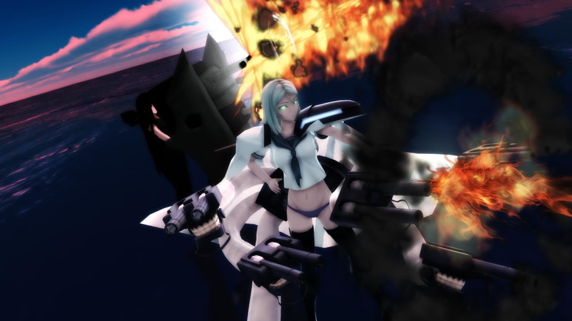
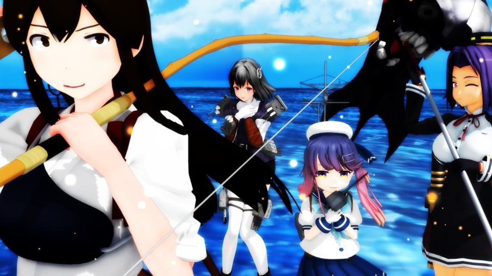

Story
Prologue
多くの人命と艦船が海に沈んだ第二次世界大戦――。
それから約70年の月日が流れ、かつて世界中の国々を巻き込んだ戦争は過去のものとなっていた。
人々にとって 平和な日常 と 自由な青い海 は、当たり前のものだった。
人類の存在を脅かす 深海棲艦 が現れる、その日までは――。

艦艇の兵装では捕捉しきれない小さな体躯と機動力。
戦車の砲撃にすら耐える防御力と、容易に鋼鉄の船を沈める攻撃力。
そんな“生き物の皮をかぶった軍艦”と喩えられる圧倒的な“力”を以て、彼らは本能の赴くままに破壊と殺戮をもたらした。
そして、人類はそれまで我がものとしていた制海権を容易に奪われたのだった――。
海路を封じられたことで、各国で物流が滞り、経済は破綻し、食料や燃料資源はあっという間に枯渇した。
四方を海で囲まれる日本は、瞬く間に亡国の危機へと追いやられ、人々はかつての戦時下を彷彿とさせる苦境と絶望に直面した。
人々は失ってから理解したのだ。
平凡で無為な日常を送れる幸せを――。
自由であることの尊さを――。
きたる第二次世界大戦の終戦記念日。
多くの人々が希望と平和を求め、祈りを捧げた日。
打ちひしがれる人々の声を聞きつけたかのように、救世主は現れた――。

それは、かつて世界大戦で海原を駆けた軍艦の“力”を秘め、人と見紛うほどの知性と感情を有する存在―― 艦娘 だった。
日本をはじめとした海洋国や沿岸国を中心に、各国は自国の艦艇に所縁のある艦娘と協力関係を結び、深海棲艦に対抗するようになった。
そして、人類は結束し、艦娘と共に二年の歳月をかけて深海棲艦から海を取り返した――。
それから約一年後。
深海棲艦による被害は、ある程度の落ち着きをみせていた。
今日では、艦娘は世界のミリタリーバランスを左右する、核兵器に匹敵する重要な存在となっていた。
そのような情勢のもと、世界有数の艦娘保有国である日本において、彼女たちは国防の要となっていた。
Season1
とある夏の日、日本近海で実施された海上護衛任務中に一人の艦娘が発見された。
それは、戦うことはおろか海上を歩くことさえできず、自分が誰かすらも覚えていない謎の艦娘だった。
そのような“役に立たない艦娘”を歓迎しない空気が漂う中、試験や検査に臨む彼女の姿を見た一人の艦娘―― 翔鶴 は、その記憶喪失の艦娘が自分の姉妹艦である 瑞鶴 だと本能的に確信する。
力も記憶もない名無しの艦娘が、いかにして翔鶴と出会い、艦娘「瑞鶴」として鎮守府に着任することとなったのか。
その航跡を辿る。
Season2
鎮守府に着任して以降、瑞鶴は懸命に海上歩行訓練に取り組んでいた。しかし、その成果は芳しくなく、監督者として派遣された加賀も厳しい評価を下していた。
なぜ自分はみんなと同じようにできないのか。
自分はいったい何のために生まれたのだろうか。
瑞鶴は己に問いかけながら、仲間たちの献身的な協力に応えられない自分を責めていた。
ある者は力になれない自分を責め、またある者は艦娘としての使命を噛みしめながら、周囲の者たちがそれぞれの思いを胸に瑞鶴を見守る中、彼女の命運を分ける日が刻一刻と近づいていた――。